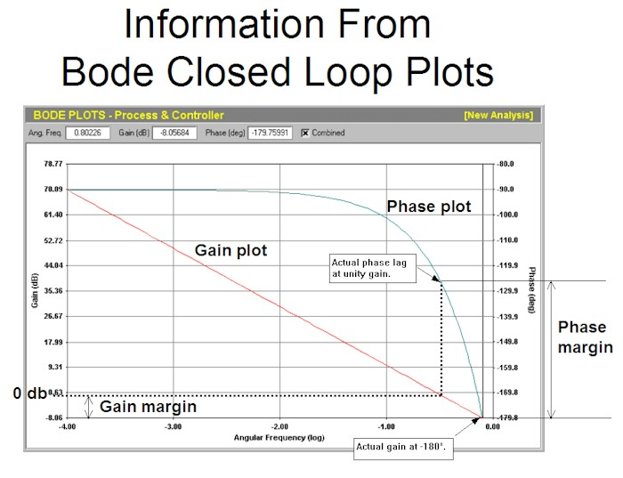

|
| [Home] [About us] [Contact us] [Training] [Optimisation services] [Protuner] |
| [Loop signatures] [Case histories] [Continuous loop performance monitoring] |
|
Loop Problem Signatures Part 2 BASICS OF FREQUENCY PLOTS - PART 3 In the previous article in this series it was shown that the ideal Bode closed loop gain plot for a simple first order lag, deadtime, self-regulating process is a straight line sloping downwards from left to right at a slope of –20 db/decade. It is relatively easy to establish how good the tuning is from this plot, and how safe it is. The first thing to check is if good pole cancellation has been achieved. To do this one examines the plot to see if the line is straight, for as mentioned in the previous article, if it is bent up at the bottom, the response will be slower than desirable, and the process may "step-up" to setpoint. Alternatively if it is bent downwards at the bottom it will mean that the response will be more cyclic than desirable. From the safety (sometimes referred to as "robustness") point of view the plot allows us to easily determine two factors called gain margin and phase margin. It will be remembered as well from the previous article that for instability to occur in a feedback loop the combined loop gain must be ≥ unity (0db) and simultaneously, the (phase angle) must be at -180°. The gain margin effectively tells us how far away we are from unity gain on our combined plot; by seeing what the value of the gain is when the phase lag is at -180°. In the closed loop plot in Figure 1, it can be seen that when the phase lag is at -180°, the actual gain is –8.06 db. Therefore to get to unity gain we would have to increase our controller's proportional gain by a further 8.06 db for instability to occur. We say that the gain margin is 8.06 db.  Figure 1 For interest's sake, quarter-wave damping has a gain margin of approximately 6.25 db. As mentioned in previous articles, quarter wave damping is not recommended for several practical reasons, and the fastest tuning on a self-regulating process as recommended by Techmation, the manufacturers of the Protuner Loop Analyser, would have a gain margin of 8 db. This would result in one overshoot and one undershoot on this simple process. The phase margin tells us how far we are away from -180°, when the gain in the loop is unity. As can be seen in Figure 1, if we go to the unity gain mark we can read off the phase lag at this point, which is roughly 120°. Therefore our phase margin is 180° - 120° = 60°. As a general rule of thumb 60° is about the minimum phase margin one would like to see on this type of process. Another factor that can be taken into account when looking at robustness of tuning is something called the damping factor. This is however considerably more complicated and is beyond the scope of this article. This concludes this section on the basics of frequency plots. The main reason why I have included it is so that the reader will have a better understanding of the remaining articles in this series. These will be dealing with the approach to the tuning of every single process dynamic he or she may encounter in the real world of industrial control. Very few people actually ever use frequency plots, which in reality are almost impossible to generate from a real process unless you have a tool like the Protuner that is capable of doing this. I myself use them for the odd occasion where a limited controller does not let me use the tuning parameters I would like to have inserted in the controller. Typically many controllers have very limited low-end gains. For example, a well known make of PLC prevents one for putting in gains less than 0.5, and on fast processes like flows, it is one generally uses gains much smaller than that. Therefore in cases like that, one can start fiddling around in the PLC to try and change the loop gain by inserting some other block in the loop, or alternatively one can try and get by by using the bigger gain that you are limited to, and then increasing the integral until sufficient gain and phase margins are reached. (This may not give nice control but it will be probably be better than the original "as-found" tuning). The other thing that I use the frequency plot for is to model a process for simulation. This is a powerful feature in the Protuner, which after doing the tuning from the frequency plots, then builds a transfer function model using the Bode Plots. Unfortunately this can be rather limited especially on more complex dynamics. In cases like these one has to "tweak" the model. In the next loop signature article we will start off our examination of every single type of process dynamics that one would be likely to find in industrial processes. These are all more complicated than the simple one we have been dealing with in the last few articles. Many of them are considered very difficult to control using feedback control. Michael
Brown is a specialist in control loop optimisation, with many years of
experience in process control instrumentation. His main activities are
consulting, and teaching practical control loop analysis and
optimisation. He gives training courses which can be held in clients'
plants, where students can have the added benefit of practising on live
loops. His work takes him to plants all over South Africa, and also to
other countries. He can be contacted at:
|